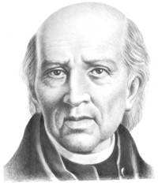
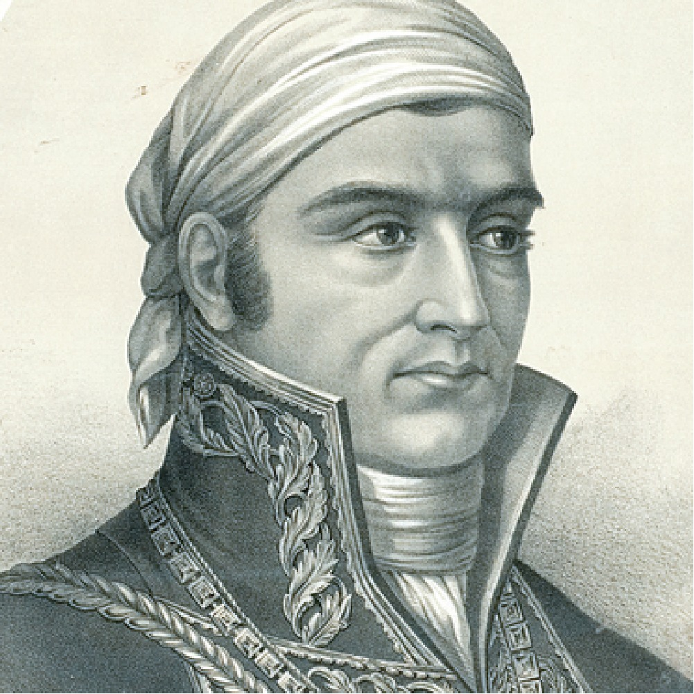

Línea de tiempo: fechas importantes
Personajes ilustres

Miguel Hidalgo
Cura del pueblo de Dolores que convocó al pueblo a levantarse en armas la madrugada del 16 de septiembre de 1810.

Josefa Ortiz de Domínguez
Alertó a los insurgentes de que la conspiración de Querétaro había sido descubierta, adelantando el inicio del movimiento.

José María Morelos
Continuó la lucha tras la muerte de Hidalgo y convocó el Congreso de Chilpancingo, donde se proclamó la primera constitución.
Datos curiosos y mitos
El grito real no fue "Viva México"
Ningún registro histórico confirma las palabras exactas que usó Hidalgo esa madrugada; la frase actual se consolidó con el paso de los años.
La independencia se consumó el 16 de septiembre
Esa fecha marca el inicio de la lucha armada en 1810; la independencia se firmó hasta el 27 de septiembre de 1821.
La campana original suena cada año
La misma campana que tocó Hidalgo en Dolores se conserva en Palacio Nacional y es la que el presidente hace sonar cada 15 de septiembre.
El verde, blanco y rojo siempre significaron lo mismo
Los colores del Ejército Trigarante representaban religión, unión e independencia; el significado de esperanza, unidad y sangre de los héroes se adoptó después.